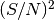

Centroidal Voronoi Tessellations (using Lloyd’s algorithm).
-
class tess.cvtessellation.CVTessellation(x_points, y_points, dens_points, node_xy=None)[source]
Uses Lloyd’s algorithm to assign data points to Voronoi bins so that
each bin has an equal mass.
Inherits from tess.voronoi.VoronoiTessellation.
| Parameters: | x_points : ndarray
Array of cartesian x locations of each data point.
y_points : ndarray
Array of cartesian y locations of each data point.
dens_points : ndarray
Density or weight of each point. For an equal-S/N generator, this
should be set to . For an equal number generator this
can be simple an array of ones.
node_xy : ndarray
A (n_points, 2) array of coordinates of pre-computed generators
for the tessellation. You can use
tess.point_accretion.PointAccretion and subclasses to build
an array of generators accordinate to target mass or S/N.
|
|---|
-
classmethod from_image(density, generators)
Convenience constructor for centroidal Voronoi tessellations
of pixel data sets.
The (x, y) point coordinates are automatically set to be the 0-based
pixel indices. CVTessellation.set_pixel_grid() is automatically
called to set the pixel grid to the match the image dimensions.
| Parameters: | density : ndarray
A 2D image with the density. The CVT partitions the density
map so each cell has approximately equal mass.
generators : ndarray
A (n_nodes, 2) array of point coordinates with initial
starting points for each Voronoi cell.
Note that coordinates are (x, y), which is the reverse of (y, x)
image indices.
|
|---|
-
membership
Array of indices into Voronoi bins for each point.
-
node_weights
Weight of each Voronoi bin (sum of enclosed point masses).